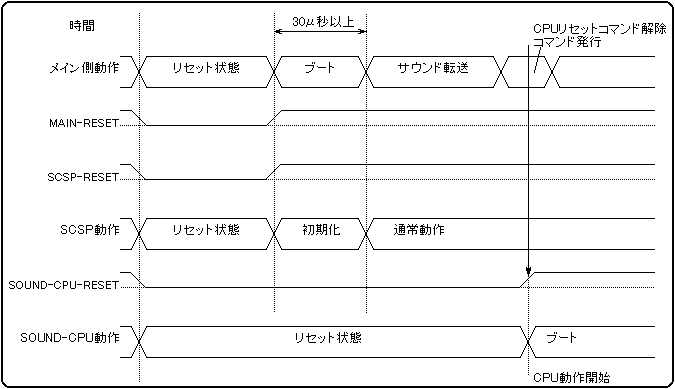
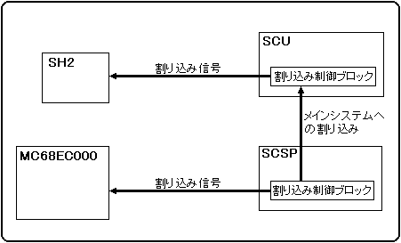

★HARDWARE Manual
★SCSPユーザーズマニュアル
★HARDWARE Manual
★SCSPユーザーズマニュアル
ちなみに、サウンドＣＰＵ“ＭＣ６８ＥＣ０００”の命令である“ＲＥＳＥＴ”命令によってリセットされることはありません。
また、“ＲＥＳＥＴ”命令は、本システムにおいて動作保証ができませんので、使用禁止です。
リセット解除後３０μ秒以上経過したら、メインブロック（ＳＨ２等）側からサウンドブロックに対してアクセスを行なうことができます。
ここで、やっとサウンドＣＰＵ用のプログラムやデータをダウンロードすることが可能となるわけですが、 その前に必ず「表２．１」に示すコントロールレジスタの“ＭＥＭ４ＭＢ”ビットに“１ｂ”を、“ＤＡＣ１８Ｂ”ビットに“０ｂ”をライトしてください。
注 意 |
リセット後には、２５Ｂ００４００Ｈに“０２００Ｈ”をライトしてください。 |
|---|
| メイン側アドレス 25B00400／1h（サウンドＣＰＵ側アドレス 100400／1h） | ||||||||||||||||
| アドレス | 25B00400h／100400h | 25B00401h／100401h | ||||||||||||||
| ビット | 15 | 14 | 13 | 12 | 11 | 10 | ９ | ８ | ７ | ６ | ５ | ４ | ３ | ２ | １ | ０ |
| レジスタ | − | M4 | D18 | VER[7:4] | MVOL[3:0] | |||||||||||
| 初期値 | 0 | 0 | 0 | 0 | 0 | 0 | 1 | 0 | 0 | 0 | 0 | 0 | 0 | 0 | 0 | 0 |
| ＆Ｈ(16進) | 0 | 2 | 0 | 0 | ||||||||||||
ダウンロードが終了したら、ＳＭＰＣによるサウンドＣＰＵのリセット（サウンドリセット）を解除してください。
| 注 意
| ＭＣ６８ＥＣ０００でのプログラミングにおいて、以下の命令は使用禁止です。 |
|---|---|
ＲＥＳＥＴ命令 | |
ＴＡＳ 命令 |
| MAIN/SOUND | D15 D８ | D７ D０ | MAIN/SOUND | |
| RESET VECTOR-0 | 0(2)5A00000H/000000H | スタックアドレス・上位ワード | 0(2)5A00001H/000001H | |
| 0(2)5A00002H/000002H | スタックアドレス・下位ワード | 0(2)5A00003H/000003H | ||
| RESET VECTOR-1 | 0(2)5A00004H/000004H | プログラムカウンタ・ 上位ワード | 0(2)5A00005H/000005H | |
| 0(2)5A00006H/000006H | プログラムカウンタ・ 下位ワード | 0(2)5A00007H/000007H | ||
図2.3 リセットシーケンス（動作順序図）

アクセスに関しては、メインブロック（ＳＨ２、ＳＣＵ）からサウンドブロックに対してデータのリードおよびライトが可能ですが、サウンドブロックからメインブロックに対してアクセスをすることはできませんので注意してください。
| 注 意 |
アクセスの方向 メインブロック(SH2,SCU)からサウンドブロックに対するアクセスは可能。 サウンドブロックからメインブロックに対するアクセスは不可能。 |
|---|
|
コミュニケーションコネクタに出力されている信号線は、そのままＭＩＤＩとしては使用できません。 使用する場合には、それ相応のＭＩＤＩ−Ｉ／Ｆ用オプション装置が必要になりますが、現在はそういった製品はございません。 |
図2.4 割り込みの関係

| 注 意 |
ユーザーが使用可能な割り込みレベル １〜６の６レベル |
|---|
| 注 意 |
割り込みレベル優先度 ７:最高 ←優先度→ 最低:１ |
|---|
| ベクター番号 | アドレス | 割り込みベクタ内容 | |
| SH2 | MC68EC000 | ||
| ０ | 0(2)5A00000H | 000000H | リセットベクタ初期ＳＳＰ値 |
| 0(2)5A00004H | 000004H | リセットベクター初期ＰＣ値 | |
| : | : | : | : |
| ２５ | 0(2)5A00064H | 000064H | オートベクターレベル１割り込み |
| ２６ | 0(2)5A00068H | 000068H | オートベクターレベル２割り込み |
| ２７ | 0(2)5A0006CH | 00006CH | オートベクターレベル３割り込み |
| ２８ | 0(2)5A00070H | 000070H | オートベクターレベル４割り込み |
| ２９ | 0(2)5A00074H | 000074H | オートベクターレベル５割り込み |
| ３０ | 0(2)5A00078H | 000078H | オートベクターレベル６割り込み |
| ３１ | 0(2)5A0007CH | 00007CH | オートベクターレベル７割り込み |
★HARDWARE Manual
★SCSPユーザーズマニュアル